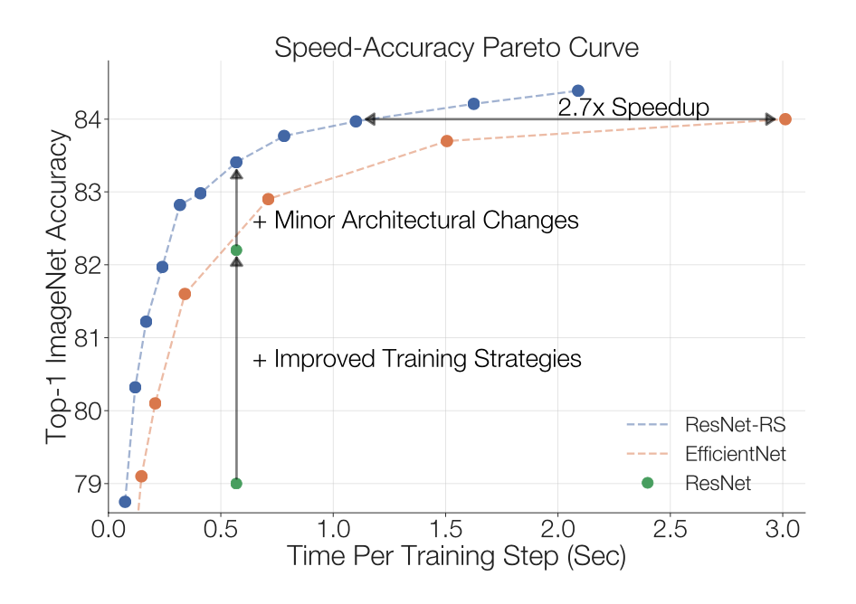
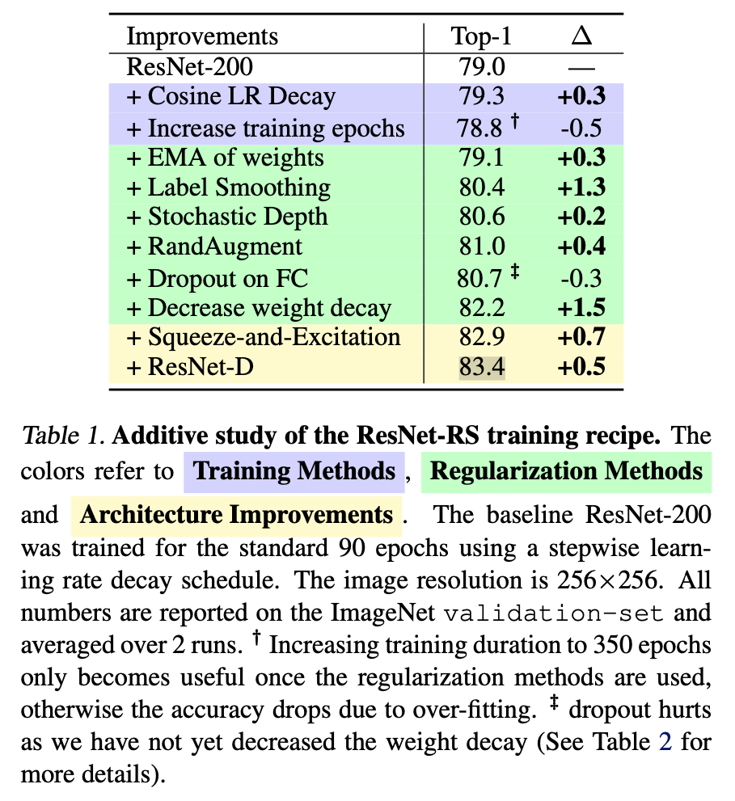
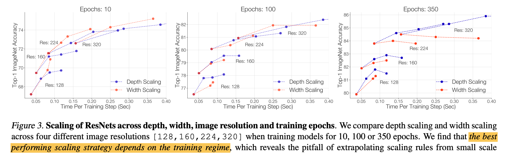
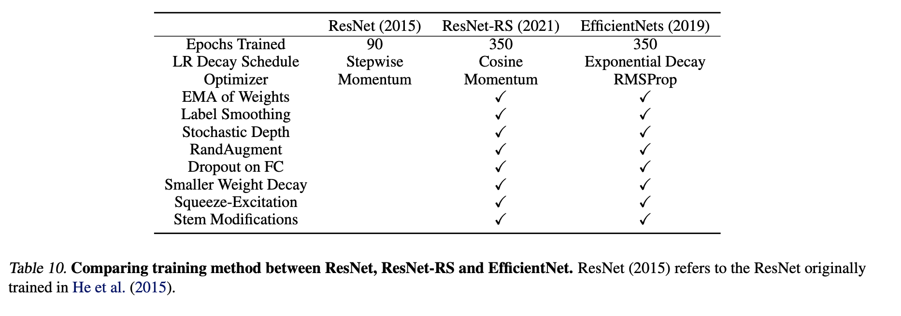
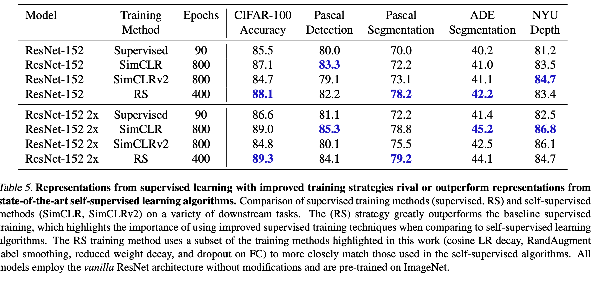

1. Read the title and make an opinion of what’s in the paper (e.g., the area, the task)
Revisiting ResNets: Improved Training and Scaling Strategies
I can see from skimming the paper that they aim to differentiate model architecture improvements compared to training strategy improvements. ML is an interesting area where experimentation is ample but time to complete that experimentation is limited and there are numerous factors all which play a part in the very simplified outcome of model accuracy. It is an exciting field though where there is much to explore, even after initial findings have been published, actually deciphering the level of impact each contributions holds.
2. Read the abstract well and form a hypothesis of
- What’s new in the paper?
- Do you have a clear overview about what the paper is all about?
Novel computer vision architectures monopolize the spotlight
Why is this the case. I would bet it is because we like to hope that there is a magical architecture that once it is found, will hold they key to all our success. Also, perhaps it is easier to attribute success to a concrete noun, like an architecture, than a more abstract method like a training technique.
I would say this outcome is not exclusive to computer vision.
Our work revisits the canonical ResNet (He et al., 2015) and studies these three aspects
The three being:
- model architecture
- training methodology
- scaling strategies
Perhaps surprisingly, we find that training and scaling strategies may matter more than architectural changes
This is an interesting stance, because it is hard to disentagle the strongly held bias that models are the source of improvement.
We show that the best performing scaling strategy
I am unfamiliar with what is meant by Scaling strategy. Hopefully the paper will make it abundantly clear.
(1) scale model depth in regimes where overfitting can occur (width scaling is preferable otherwise);
(2) increase image resolution more slowly than previously recommended
These are obviously their two contributions on top of trying to disentangle the architecture from training improvements.
Their goal seems to focus on improving inference speed while maintaining accuracy. This does however, seem to be an architecture choice, so I’m not quite sure how the paper will proceed.
3. Look at the images and extract a set of “questions” about what is not clear about their method from the images. Now your job is to answer these questions by reading the paper.
Much of the paper is text because they are describing strategies, and not visualizing model architectures. It makes the paper a bit more demanding to read, but some of their outcomes are visualized like below:

There is also this image which does a good job of showing some of the different approaches that can be taken to improver performance and their relative benefit. Since it is an additive study, it does not account for all connected factors, but gives at least a start to understanding these possible improvements.

Scaling approaches are shown below, (emphasis mine)

The conclude by building a new ResNet, which is resized and trained according to their best findings to show improvements in speed and accuracy to comprabable models, such as EfficientNet.

4. Read the method aiming to answer your “questions” about the paper. Focus on understanding only the things relevant for the story (i.e., to understand the contribution).
we design scaling strategies by exhaustively training models across a variety of scales for the full training duration (e.g. 350 epochs instead of 10 epochs)
They do a good job of going into full depth. There area a lot of areas they are trying to cover in this paper. There are namely six contributions they wish to prove:
We summarize our contributions:
- An empirical study of regularization techniques and their interplay, which leads to a regularization strategy that achieves strong performance (+3% top-1 ac- curacy) without having to change the model architecture.
- A simple scaling strategy: (1) scale depth when over- fitting can occur (scaling width can be preferable otherwise) and (2) scale the image resolution more slowly than prior works (Tan & Le, 2019). This scaling strategy improves the speed-accuracy Pareto curve of both ResNets and EfficientNets.
- ResNet-RS: a Pareto curve of ResNet architectures that are 1.7x - 2.7x faster than EfficientNets on TPUs (2.1x - 3.3x on GPUs) by applying the training and scaling strategies.
- Semi-supervised training of ResNet-RS with an additional 130M pseudo-labeled images achieves 86.2% top-1 ImageNet accuracy, while being 4.7x faster on TPUs (5.5x on GPUs) than the corresponding EfficientNet-NoisyStudent (Xie et al., 2020).
- ResNet checkpoints that, when fine-tuned on a diverse set of computer vision tasks, rival or outperform state-of-the-art self-supervised representations from SimCLR (Chen et al., 2020a) and SimCLRv2 (Chen et al., 2020b).
- 3DResNet-RS by extending our training methods and architectural changes to video classification. The resulted model improves the top-1 Kinetics-400 accuracy by 4.8% over the baseline.
Yes, there is quite a bit here, and they are tackling results on many fronts:
- Training Strategies,
- Model Scaling
- Architectural Improvements
- use of additional data
There are devoted sections to each of the below points, which i will summarize their findings:
Improved Training Methods: essentially decrease weight decay if using many regularization techniques.
Scaling Rules: the best performing scaling strategy depends on the training regime. If you can train for enough epochs, go for depth, if not, go for width.
Highly-Tuned ResNets: the ResNet-RS is their proof that adding in simple modern changes, factors of speedups can be acheived.
5. Read the experiments to convince you that the show results are caused by their claim. Be aware that the experiments highlighted are the best scenarios and are fully hyper-parameter tuned.
The paper argues that improved supervised training is also more competitive than comparing to self-supervised methods, especially in transfer learning regimes. It seems they desire to show that using improved techniques they describe, you can achieve good performance compared to self-supervised methods like SimCLR and SimCLRv2; however to me it seems to be a mixed bag, that does not really show much useful imformation. Of course improving strategies should improve transfer performance, and comparing to SimCLR does not really make sense to me, because they did not put the model into the SimCLR algorithm, they just compared it to that algorithms results.

6. Make sure you answered all your questions. Did the authors convince you that their story has the effect that they claim?
I think I now have a good idea of the push of this paper. I was less convinced than I expected to be, but there were a lot of points they were trying to make which I will keep in mind, but also makes it harder to grasp their main point from the start.